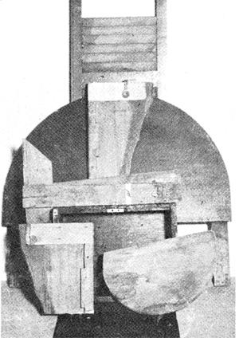
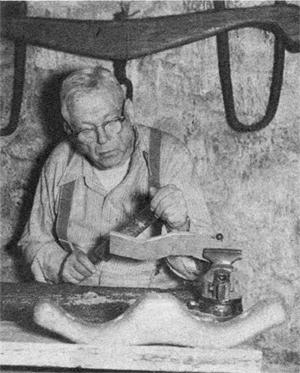

Profits From America's Past
How to restore and reproduce antique tools and handiworks, including salvaging scraps as models, and from home crafts projects to possible profits.
By Henry L. Farr
July/August 1975
This article began at a Treasures and Trash barn in upstate New York, where I noticed a tourist poking at an old butter churn. "Say, this thing isn't worth lugging out to the car,". he grumbled to his wife. "Why don't they make good copies of tools like they do 'with antiques? I'd pay for something really attractive."
The tourist's comments set me to thinking as I drove home. "Many early American farm and home implements, known to antique collectors as `primitives', are masterpieces of design as well as colorful period pieces," I mused. "Although such articles are often reproduced commercially for mass sale, good handmade copies are much less common. But I don't believe it would be that hard to turn out a limited number of yesteryear's tools by hand. Why, I'll bet I could do it myself!".
And that's how our family comes to be making such decorative items as six inch tall salt and pepper sets, miniature rakes, and ox yokes of all sizes (some of which bring up to S100). Interest in Americana is running high as the Bicentennial approaches, and it seems that my idea was well timed. Perhaps some of the procedures we follow may help other craftsmen to profit from this revived appreciation for our nation's past.
My first step toward the founding of my new business was a trip to the Farmers' Museum in Cooperstown, New York, where I studied the old-time artifacts on the walls and in the display groups (and shot a roll and a half of film). I then called at the bookstore for a copy of Frontier Living by Edwin Tunis see the bibliography with this article and a list of outstanding craftsmen in upper New York State. (I'd also suggest an investment in some further useful references:
[1] a facsimile copy of an early Sears or Montgomery Ward catalog we use the 1895 Ward and the 1925 Sears,
[2] How to Start and Organize a Small Business by Ralph Metcalf, and
[3] How to Make Money with Your Crafts by Leta W. Clarke.)
Next came materials. Since I'd decided to make my reproductions entirely from old wood, I began to collect solid chunks of the material salvaged from old bedsteads and tables picked up at rummage sales. Sheds that were being torn down provided a good source of boards and small timbers.
The use of such materials does present some problems which made my new trade more difficult to learn. I'd already ruined two yoke blocks, for instance, before a friend taught me to bore the necessary holes before I started to dress the piece. He also showed me how to sand inside corners and get at interior curves. "When wood ages, the grain changes," my instructor explained. "But the old stock is best for your purposes."
Both beginners and expert craftsmen will find the answers to many such technical problems in The Complete Woodworking Handbook by Adams and Stieri. (The Handbook, unfortunately, is out of print but may be available from your local library.-MOTHER.) This work covers all aspects of the subject; project planning, types of wood, gluing, the use of power tools, etc. and is illustrated with over 500 pictures and diagrams.
Finishes are, of course, especially important in the creation of handsome, authentic-looking reproductions. This topic is covered thoroughly in Chapters 15 and 16 of The Complete Woodworking Handbook but if you come across an unusual problem (the best treatment for old, gray basswood, for instance), you may want to consult the du Pont people (du Pont de Nemours & Co., Inc., Wilmington, Delaware 19898). This firm not only advised me but was kind enough to send samples of wood, finished to my requirements, with detailed directions on how the work had been done.
Just what artifacts are best copied is something you'll have to learn by experience, as we did by making up samples and discovering which items are most in demand in your area.
My first sale was to our mail carrier, who came into the shop with a form to be signed, saw my display, and ordered a salt and pepper set striped with narrow green and yellow bands. He seemed satisfied with the price ($6.00) and later commissioned two more sets. Another early job was two trenchers-12 and 15 inches in diameter, at $16.00 for the pair-for a retired math teacher who originally dropped in to make a Fuller Brush delivery. (I split a number of wooden plates and trenchers in attempting to form them on the lathe, and eventually ordered a good rout& for the preliminary work on such pieces.)
Our bread-and-butter article has proved to be ox yokes. We stock a selection of miniatures up to 18 inches in length, but make the real money from the three-quarter and full-sized yokes which we handcraft to order.
Also among our best sellers are the two and three tine wooden hayforks of the type used in the salt marshes of Massachusetts. We began to receive requests for these items soon after we went into business, and I learned to make them during two weekends of study and practice with a noted Connecticut crafter.
The handle and tines of the hayfork are roughed out of hickory or ash with a saw, and a removable bolt is inserted through the shaft just above the division of the prongs to prevent unwanted splitting. The wood can then be shaped with a drawknife or one of Stanley's new "Surform" tools. Since the woodworking shop we once used closed last year, we've been heating and bending the forks in an old washtub. We have no jigs, but simply fasten the pieces with clamps and U-bolts until the shape "sets".
We make forks in all sizes and charge from $4.00 for a
miniature to $25.00 for a finely polished and bent full-length replica (a popular item with the Bicentennial so much in the news). These articles are displayed in pairs, crossed above a model fireplace, and are usually bought in sets of two.
We soon gave up on Puritan cradles and wooden-hooped barrels, and substituted such items as apple butter paddles or "hoes", sections of 18th century style wooden water pipe, and a variety of stools. Just now we're experimenting with flails, both miniature and full-length. (These tools resemble broomsticks joined in pairs, and were used in threshing grain.)
It's difficult to predict just what will sell. In fact, some of your greatest successes may come by chance as did our stroke of luck with a black, bleary-eyed, 18-inch wooden whale. A picture of "Old Whiskey" taken for our local paper came out so clear that I had a batch of 3 X 5 envelope stuffers made up, and these brought us more than 50 orders within two weeks.
We've found that it's important to cater to the whims and interests of our customers. One of my first special orders came from a 4-H group, which commissioned a 26-inch all wood shovel gilded for presentation as a graduation award. And just last week, at a meeting of our Bicentennial Committee, I agreed to make up a scale model of a metal and wood plow for an English visitor. He had noticed a full-size ox yoke I'd delivered to the committee, and wanted an article to commemorate his great grandfather's settlement in (as he called it) "Newbraska". Sometimes, too, a customer will send us a piece u page 43) of stock from which to make up an order.
1'd originally determined to stay with wood only, but when orders came in for copies of grain scoops and apple slicers with metal trim and edges, I laid up a supply of copper and tin strips to apply to such tools. The horn of a 75-pound anvil serves me as a tinner's "stake" (the small anvil used by sheet metal workers).
The craftsman who hasn't yet buckled down to selling reproductions or anything else may feel skeptical of his ability to do so especially when plenty of cheap, machine made Americana is available. If you're really worried about that kind of competition, however, you'll find it much less prevalent in the South and Midwest. Actually, though, it isn't a serious consideration in any part of the country. Every area has its share of buyers with money and discriminating taste, who will pass up mass-produced, hurriedly machined items. Such persons expect to pay top prices for top quality, and especially appreciate a well finished article.
"If your quality is good enough, people will soon forget a high price and return for another purchase," Frank White-curator of Old Sturbridge Village in Massachusetts-remarked to me as we watched expert craftsmen and women create and use old time implements for the entertainment of visitors. I'd suggest you keep that advice in mind when you fix your rates, and try to get a minimum of $3.00 or $4.00 per hour for your time.
Your problem, then, is to attract the attention of customers who appreciate good workmanship and are willing to pay for it. And the best way for an unknown craftsman to get his foot in the door is to sell on consignment (that is, leave your products for sale, to be returned to you if they're not purchased) to shops that handle high quality items.
You can also do well with a mail order business (especially in the South and Midwest, where as I've already mentioned commercial reproductions are uncommon). One approach I've used in those parts of the country is to send samples of my work to secretaries of organizations, who often agree to take orders at 20 to 25 percent commission for the benefit of their groups.
You also may find it profitable to insert one-inch display ads in quality magazines but in that case it's better to mention only one item per ad. When a brand-new potential customer is forced to make a choice, he often ends up buying nothing:
Since we close our workshop during the four summer months, we don't push any regular marketing plan but always seem to have unfilled orders ahead of us. (If your area is popular with taurists, you'll probably want to concentrate your sales efforts on the season when the most visitors are passing through.-MOTHER.)
Quality has always been our first consideration, and sells itself now that we're established. Good workmanship has often brought us repeat orders and requests for additional items from early customers. A former FBI agent, now in retirement in Vermont, has sent for miniature ox yokes three times (and has twice shipped special stock for our use). An Oregon dentist has re-ordered half scale hayforks and just last week gave us a commission for a wooden fork and two full-size flails.
Business is really good in fact, I'm thinking of adding hand lettered tavern and tollgate signs to our line next winter. Apparently the Bicentennial has created as much interest in reproductions as in genuine antiques. Thousands of Americans like the tourist whose remark got me into the trade in the first place-are ready and willing to pay good money for well-made replicas of implements from "the good old days", and I truly believe that this field offers a fine opening for those of MOTHER's readers who want to turn their craft skills to profit.
A bibliography for the reproduction business
How to Start and Organize a Small Businessby Ralph Metcalf, Small Business Administration, 1441 L Street, Washington, D.C. 20416, $1.05.
How to Make Money with Your Craftsby Leta W. Clarke, William Morrow & Company, Inc., New York, 1973, $6.95 (also available from MOTHER'S Bookshelf).The Complete Woodworking Handbook by Jeanette Adams and Emanuele Stied, Arco Publishing Co., Inc., New York, 1960 (out of print see your library).
Frontier Livingby Edwin Tunis, World Publishing Co., Inc., New York, 1961, $6.95.A Reverence for Wood by Eric Sloane, paperback edition, Ballantine Books New York, 1973, $2.95 (also available from MOTHER'S Bookshelf).
A Museum of Early American Toolsby Eric Sloane, paperback edition, Ballantine Books, New York, 1973, $2.95 (also available from MOTHER'S Bookshelf).
The Seasons of America Pastby Eric Sloane, Wilfred Funk, New York, 1958, $7.50 (also available from MOTHER'S Bookshelf).
Various reprints of old mail-order catalogs are available. Among them are the following:
Catalogue No. 57, Montgomery Ward & Co., 1895, Dover Books, New York, 1969, $6.95.
Catalogue No. 117, Sears, Roebuck & Co., 1908, The Gun Digest Company, Chicago, 1969, $6.95.
 |
 |
|
|
 |
|
|